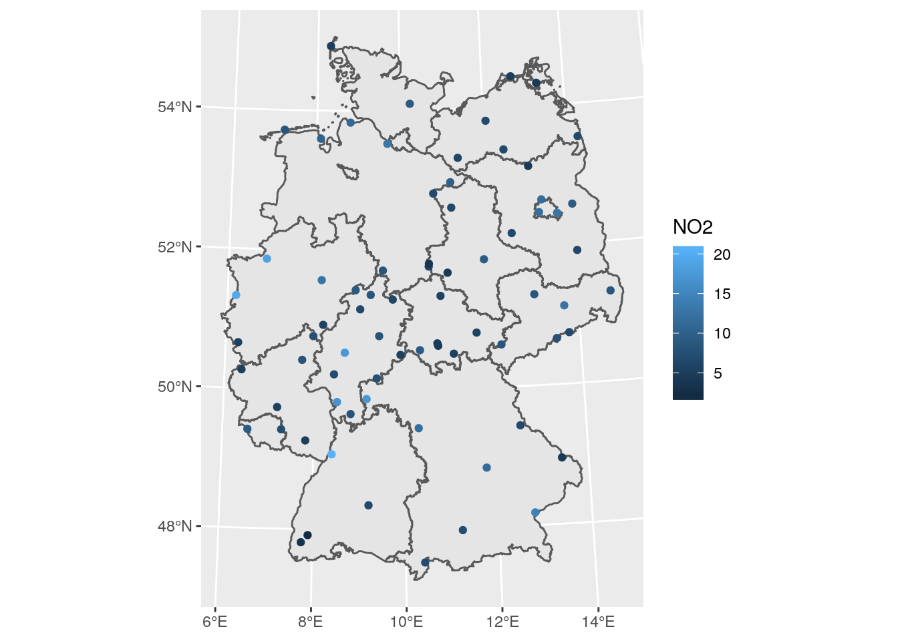
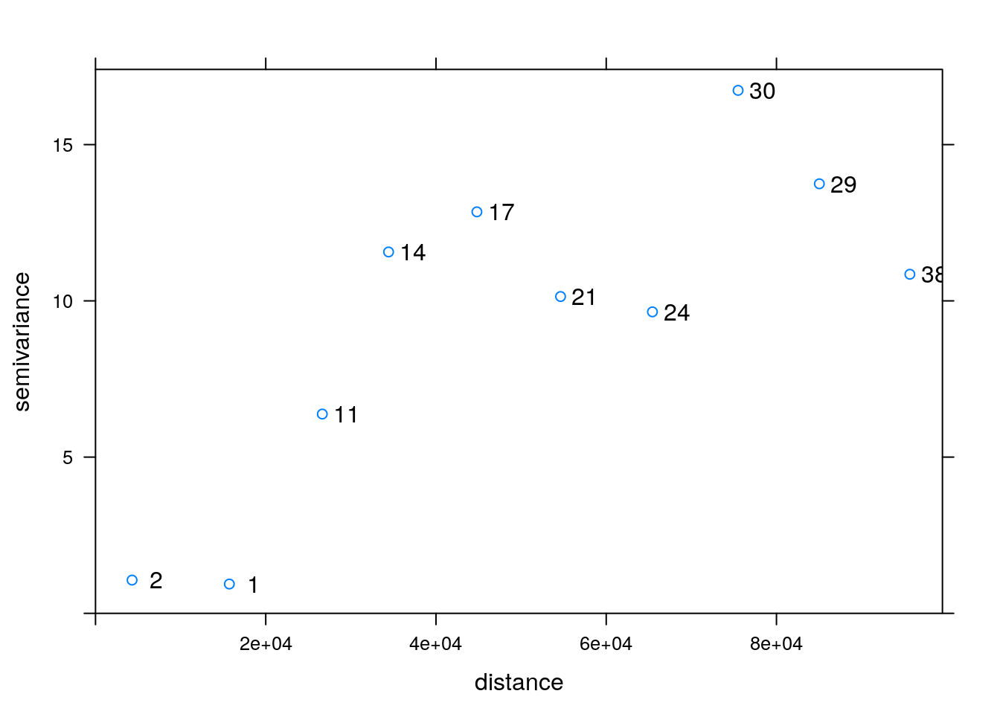
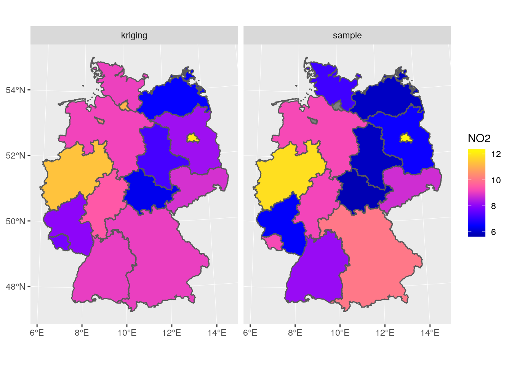
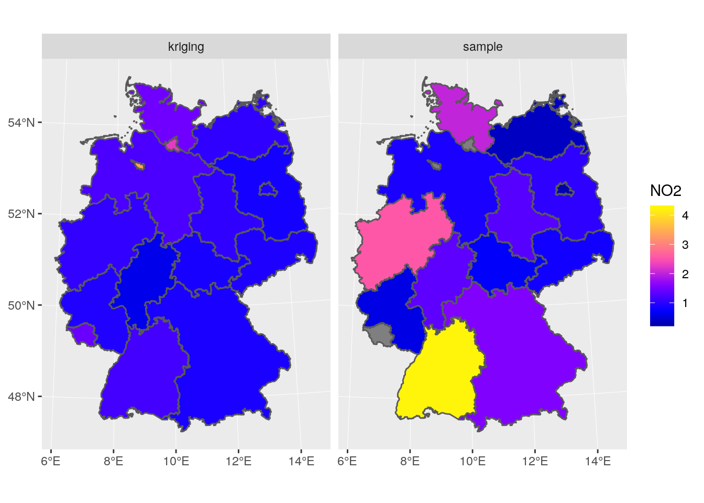
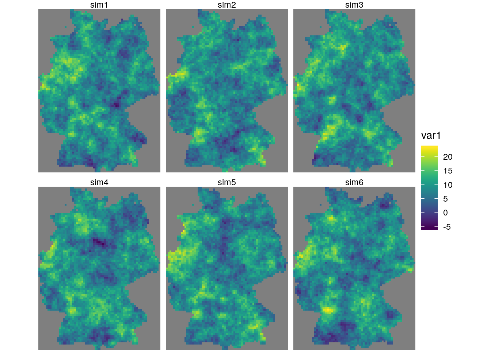
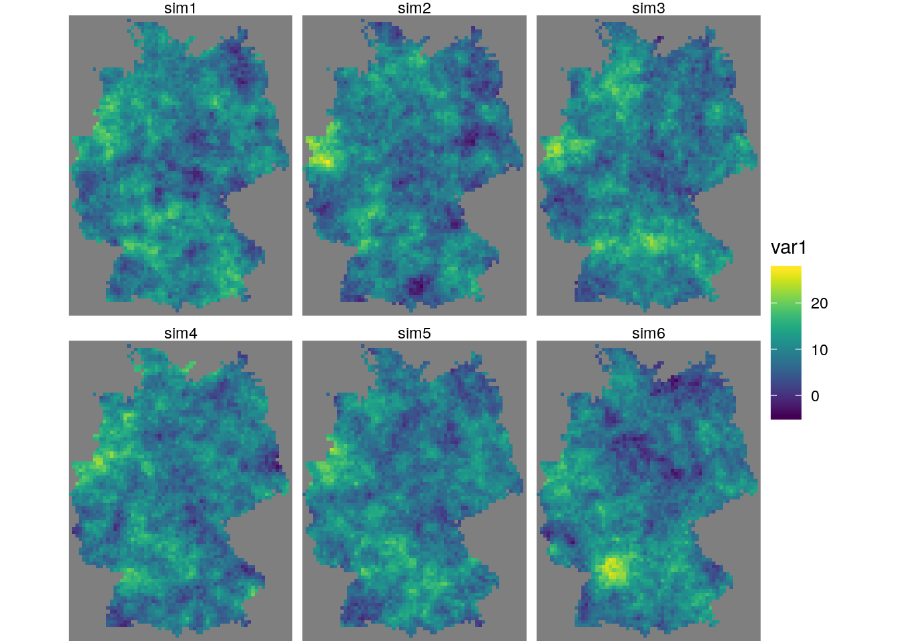
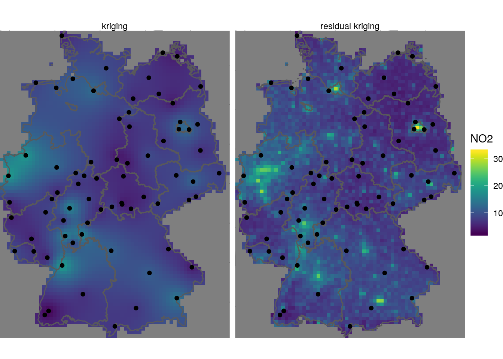
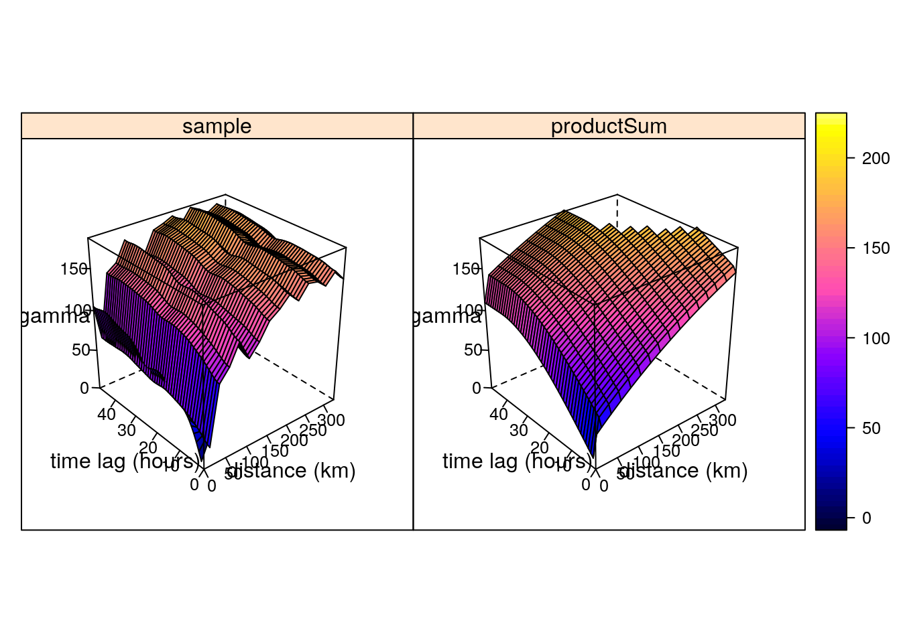
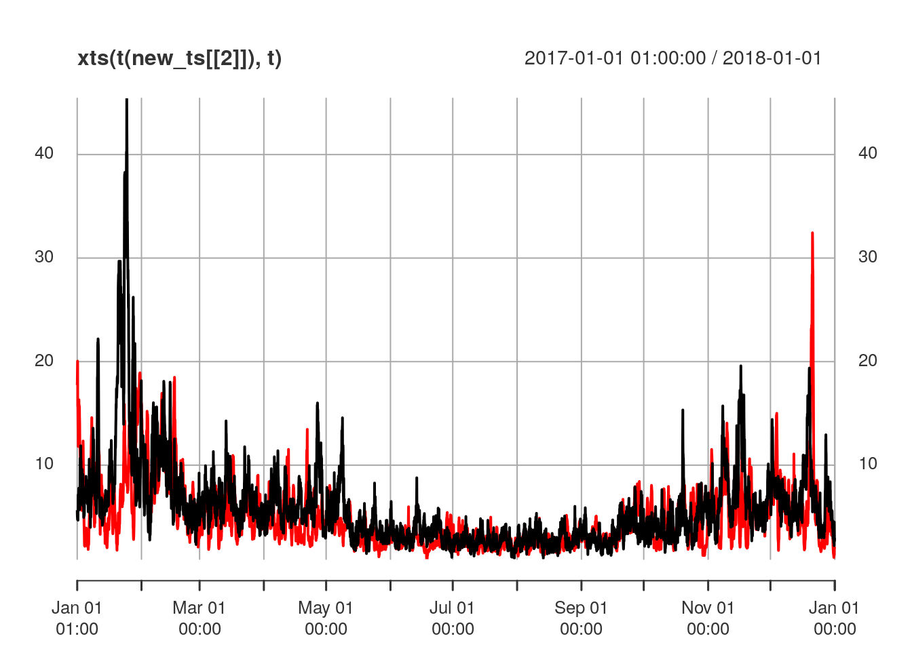
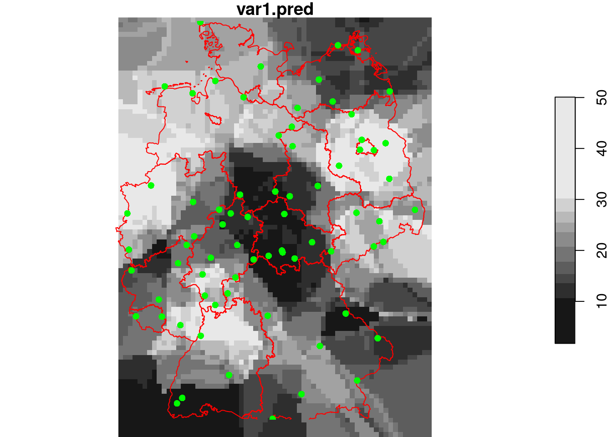

Chapter 16 Interpolation and Geostatistics
Geostatistics is concerned with the modelling, prediction and simulation of spatially continuous phenomena. The typical problem is a missing value problem: we observe a property of a phenomenon \(Z(s)\) at a limited number of sample locations \(s_i, i = 1,...,n\), and are interested in the property value at all locations \(s_0\), so we have to predict it for unobserved locations. This is also called kriging, or Gaussian process prediction. In case \(Z(s)\) contains a white noise component \(\epsilon\), as in \(Z(s)=S(s)+\epsilon(s)\), an alternative but similar goal is to predict \(S(s)\), which may be called filtering or smoothing.
In this chapter we will show simple approaches for handling geostatistical data, will demonstrate simple interpolation methods, explore modelling spatial correlation, spatial prediction and simulation. We will use package gstat (Pebesma and Graeler 2019, Pebesma (2004)), which offers a fairly wide palette of models and options for geostatistical analysis.
16.1 Preparing the air quality dataset
The dataset we work with is an air quality dataset obtained from the European Environmental Agency (EEA). European member states report air quality measurements to this Agency. So-called validated data are quality controlled by member states, and are reported on a yearly basis. They form the basis for policy compliancy evaluations.
The EEA’s air quality e-reporting website gives access to the data reported by European member states. We decided to download hourly (time series) data, which is the data primarily measured. A web form helps convert simple selection criteria into an http request. The following URL
https://fme.discomap.eea.europa.eu/fmedatastreaming/AirQualityDownload/AQData_Extract.fmw?CountryCode=DE&CityName=&Pollutant=8&Year_from=2017&Year_to=2017&Station=&Samplingpoint=&Source=E1a&Output=TEXT&UpdateDate=was created to select all validated (Source=E1a) \(NO_2\) (Pollutant=8) data for 2017 (Year_from, Year_to) from Germany (CountryCode=DE). It returns a text file with a set of URLs to CSV files, each containing the hourly values for the whole period for a single measurement station. These files were downloaded and converted to the right encoding using the dos2unix command line utility.
In the following, we will read all the files into a list,
files = list.files("aq", pattern = "*.csv", full.names = TRUE)
r = lapply(files[-1], function(f) read.csv(f))then convert the time variable into a POSIXct variable, and time order them
Sys.setenv(TZ = "UTC") # make sure times are not interpreted as DST
r = lapply(r, function(f) {
f$t = as.POSIXct(f$DatetimeBegin)
f[order(f$t), ]
}
) and we deselect smaller datasets that do not contain hourly data:
r = r[sapply(r, nrow) > 1000]
names(r) = sapply(r, function(f) unique(f$AirQualityStationEoICode))
length(r) == length(unique(names(r)))
#> [1] TRUEand then combine all files using xts::cbind, so that they are matched based on time:
library(xts)
r = lapply(r, function(f) xts(f$Concentration, f$t))
aq = do.call(cbind, r)We can now select those stations for which we have 75% of the hourly values measured, i.e. drop those with more than 25% hourly values missing:
# remove stations with more than 75% missing values:
sel = apply(aq, 2, function(x) sum(is.na(x)) < 0.75 * 365 * 24)
aqsel = aq[, sel] # stations are in columnsNext, the station metadata was read and filtered for rural background stations in Germany by
library(tidyverse)
read.csv("aq/AirBase_v8_stations.csv", sep = "\t", stringsAsFactors = FALSE) %>%
as_tibble %>%
filter(country_iso_code == "DE", station_type_of_area == "rural",
type_of_station == "Background") -> a2These stations contain coordinates, and an sf object with (static) station metadata is created by
library(sf)
library(stars)
a2.sf = st_as_sf(a2, coords = c("station_longitude_deg", "station_latitude_deg"), crs = 4326)We now subset the air quality data to stations that are of type rural background:
sel = colnames(aqsel) %in% a2$station_european_code
aqsel = aqsel[, sel]We can compute station means, and join these to stations locations by
tb = tibble(NO2 = apply(aqsel, 2, mean, na.rm = TRUE), station_european_code = colnames(aqsel))
crs = 32632
right_join(a2.sf, tb) %>% st_transform(crs) -> no2.sf
#> Joining, by = "station_european_code"
# load German boundaries
data(air, package = "spacetime")
de <- st_transform(st_as_sf(DE_NUTS1), crs)
ggplot() + geom_sf(data = de) + geom_sf(data = no2.sf, mapping = aes(col = NO2))
16.2 Sample variogram
In order to make spatial predictions using geostatistical methods, we first need to identify a model for the mean and for the spatial correlation. In the simplest model, \(Z(s) = m + e(s)\), the mean is an unknown constant \(m\), and in this case the spatial correlation can be modelled using the variogram, \(\gamma(h) = 0.5 E (Z(s)-Z(s+h))^2\). For processes with a finite variance \(C(0)\), the variogram is related to the covariogram or covariance function through \(\gamma(h) = C(0)-C(h)\).
The sample variogram is obtained by computing estimates of \(\gamma(h)\) for distance intervals, \(h_i = [h_{i,0},h_{i,1}]\): \[ \hat{\gamma}(h_i) = \frac{1}{2N(h_i)}\sum_{j=1}^{N(h_i)}(z(s_i)-z(s_i+h'))^2, \ \ h_{i,0} \le h' < h_{i,1} \]
with \(N(h_i)\) the number of sample pairs available for distance interval \(h_i\). Function gstat::variogram computes sample variograms.
library(gstat)
v = variogram(NO2~1, no2.sf)
plot(v, plot.numbers = TRUE) This chooses default maximum distance (
This chooses default maximum distance (cutoff: one third of the length of the bounding box diagonal) and (constant) interval widths (width: cutoff divided by 15). These defaults can be changed, e.g. by
library(gstat)
v0 = variogram(NO2~1, no2.sf, cutoff = 100000, width = 10000)
plot(v0, plot.numbers = TRUE) Note that the formula NO2~1 is used to select the variable of interest from the data file (NO2), and to specify the mean model: ~1 refers to an intercept-only (unknown, constant mean) model.
16.3 Fitting variogram models
In order to progress toward spatial predictions, we need a variogram model \(\gamma(h)\) for (potentially) all distances \(h\), rather than the set of estimates derived above: in case we would for instance connect these estimates with straight lines, or assume they reflect constant values over their respective distance intervals, this would lead to statisical models with non-positive covariance matrices, which is a complicated way of expressing that you are in a lot of trouble.
To avoid these troubles we fit parametric models \(\gamma(h)\) to the estimates \(\hat{\gamma}(h_i)\), where we take \(h_i\) as the mean value of all the \(h'\) values involved in estimating \(\hat{\gamma}(h_i)\). For this, when we fit a model like the exponential variogram,
v.m = fit.variogram(v, vgm(1, "Exp", 50000, 1))
plot(v, v.m, plot.numbers = TRUE) the fitting is done by minimizing \(\sum_{i=1}^{n}w_i(\gamma(h_i)-\hat{\gamma}(h_i))^2\), with \(w_i\) by default equal to \(N(h_i)/h^2\), other fitting schemes are available through argument
the fitting is done by minimizing \(\sum_{i=1}^{n}w_i(\gamma(h_i)-\hat{\gamma}(h_i))^2\), with \(w_i\) by default equal to \(N(h_i)/h^2\), other fitting schemes are available through argument fit.method.
16.4 Kriging interpolation
Kriging involves the prediction of \(Z(s_0)\) at arbitrary locations \(s_0\). Typically, when we interpolate a variable, we do that on points on a regular grid covering the target area. When we take the grid points such that they align with the points of our graphics device (screen), then nobody will notice as long as the graphic device is not resized.
We first create a stars object with a raster covering the target area, and NA’s outside it:
# build a grid over Germany:
bb = st_bbox(de)
dx = seq(bb[1], bb[3], 10000)
dy = seq(bb[4], bb[2], -10000) # decreases!
st_as_stars(matrix(0, length(dx), length(dy))) %>%
st_set_dimensions(1, dx) %>%
st_set_dimensions(2, dy) %>%
st_set_dimensions(names = c("x", "y")) %>%
st_set_crs(crs) -> grd
i = st_intersects(grd, de)
grd[[1]][lengths(i)==0] = NA
grd
#> stars object with 2 dimensions and 1 attribute
#> attribute(s):
#> A1
#> Min. :0
#> 1st Qu.:0
#> Median :0
#> Mean :0
#> 3rd Qu.:0
#> Max. :0
#> NA's :1793
#> dimension(s):
#> from to offset delta refsys point values
#> x 1 65 280741 10000 +proj=utm +zone=32 +datum... FALSE NULL [x]
#> y 1 87 6101239 -10000 +proj=utm +zone=32 +datum... FALSE NULL [y]Then, we can krige by using gstat::krige, with the model for the trend, the data, the prediction grid, and the variogram model:
k = krige(NO2~1, no2.sf, grd, v.m)
#> [using ordinary kriging]
ggplot() + geom_stars(data = k, aes(fill = var1.pred, x = x, y = y)) +
geom_sf(data = st_cast(de, "MULTILINESTRING")) +
geom_sf(data = no2.sf)16.5 Areal means: block kriging
a = aggregate(no2.sf["NO2"], de, mean)
b = krige(NO2~1, no2.sf, de, v.m)
#> [using ordinary kriging]
b$sample = a$NO2
b$kriging = b$var1.pred
b %>% select(sample, kriging) %>% gather(var, NO2, -geometry) -> b2
ggplot() + geom_sf(data = b2, mapping = aes(fill = NO2)) + facet_wrap(~var) +
scale_fill_gradientn(colors = sf.colors(20))
SE = function(x) sqrt(var(x)/length(x))
a = aggregate(no2.sf["NO2"], de, SE)
b$sample = a$NO2
b$kriging = sqrt(b$var1.var)
b %>% select(sample, kriging) %>% gather(var, NO2, -geometry) -> b2
ggplot() + geom_sf(data = b2, mapping = aes(fill = NO2)) + facet_wrap(~var) +
scale_fill_gradientn(colors = sf.colors(20))
16.6 Conditional and unconditional simulation
library(viridis)
s = krige(NO2~1, no2.sf, grd, v.m, nmax = 30, nsim = 10)
#> drawing 10 GLS realisations of beta...
#> [using conditional Gaussian simulation]
g = ggplot() + coord_equal() +
scale_fill_viridis() +
theme_void() +
scale_x_discrete(expand=c(0,0)) +
scale_y_discrete(expand=c(0,0))
g + geom_stars(data = s[,,,1:6]) + facet_wrap(~sample)
16.7 Trend models
Kriging and conditional simulation, as used so far in this chapter, assume that all spatial variability is a random process, characterized by a spatial covariance model. In case we have other variables that are meaningfully correlated with the target variable, we can use them in a linear regression model for the trend, \[ Z(s) = \sum_{j=0}^p \beta_j X_p(s) + e(s) \] with \(X_0(s) = 1\) and \(\beta_0\) an intercept, but with the other \(\beta_j\) regression coefficients. This typically reduces both the spatial correlation in the residual \(e(s)\), as well as its variance, and leads to more accurate predictions and more similar conditional simulations.
16.7.1 A population grid
As a potential predictor for NO2 in the air, we use population density. NO2 is mostly caused by traffic, and traffic is stronger in more densely populated areas. Population density is obtained from the 2011 census, and is downloaded as a csv file with the number of inhabitants per 100 m grid cell. We can aggregate these data to the target grid cells by summing the inhabitants:
library(vroom)
v = vroom("aq/pop/Zensus_Bevoelkerung_100m-Gitter.csv")
#> Observations: 35,785,840
#> Variables: 4
#> chr [1]: Gitter_ID_100m
#> dbl [3]: x_mp_100m, y_mp_100m, Einwohner
#>
#> Call `spec()` for a copy-pastable column specification
#> Specify the column types with `col_types` to quiet this message
v %>% filter(Einwohner > 0) %>%
select(-Gitter_ID_100m) %>%
st_as_sf(coords = c("x_mp_100m", "y_mp_100m"), crs = 3035) %>%
st_transform(st_crs(grd)) -> b
a = aggregate(b, st_as_sf(grd, na.rm = FALSE), sum)Now we have the population counts per grid cell in a. To get to population density, we need to find the area of each cell; for cells crossing the country border, this will be less than 10 x 10 km:
grd$ID = 1:prod(dim(grd)) # so we can find out later which grid cell we have
ii = st_intersects(grd["ID"], st_cast(st_union(de), "MULTILINESTRING"))
grd_sf = st_as_sf(grd["ID"], na.rm = FALSE)[lengths(ii) > 0,]
iii = st_intersection(grd_sf, st_union(de))
#> Warning: attribute variables are assumed to be spatially constant
#> throughout all geometries
grd$area = st_area(grd)[[1]] + units::set_units(grd$A1, m^2) # NA's
grd$area[iii$ID] = st_area(iii)Instead of doing the two-stage procedure above: first finding cells that have a border crossing it, then computing its area, we could also directly use st_intersection on all cells, but that takes considerably longer. From the counts and areas we can compute densities, and verify totals:
grd$pop_dens = a$Einwohner / grd$area
sum(grd$pop_dens * grd$area, na.rm = TRUE) # verify
#> [1] 80323301
sum(b$Einwohner)
#> [1] 80324282
g + geom_stars(data = grd, aes(fill = sqrt(pop_dens), x = x, y = y)) We need to divide the number of inhabitants by the number of 100 m grid points contributing to it, in order to convert population counts into population density.
To obtain population density values at monitoring network stations, we can use
(a = aggregate(grd["pop_dens"], no2.sf, mean))
#> stars object with 1 dimensions and 1 attribute
#> attribute(s):
#> pop_dens
#> Min. :0.000
#> 1st Qu.:0.000
#> Median :0.000
#> Mean :0.000
#> 3rd Qu.:0.000
#> Max. :0.002
#> NA's :1
#> dimension(s):
#> from to offset delta refsys point
#> geometry 1 74 NA NA +proj=utm +zone=32 +datum... TRUE
#> values
#> geometry POINT (439814 5938977),...,POINT (456668 5436135)
no2.sf$pop_dens = st_as_sf(a)[[1]]
summary(lm(NO2~sqrt(pop_dens), no2.sf))
#>
#> Call:
#> lm(formula = NO2 ~ sqrt(pop_dens), data = no2.sf)
#>
#> Residuals:
#> Min 1Q Median 3Q Max
#> -7.87 -1.82 -0.49 1.56 8.11
#>
#> Coefficients:
#> Estimate Std. Error t value Pr(>|t|)
#> (Intercept) 4.627 0.693 6.67 4.6e-09 ***
#> sqrt(pop_dens) 321.802 49.660 6.48 1.0e-08 ***
#> ---
#> Signif. codes: 0 '***' 0.001 '**' 0.01 '*' 0.05 '.' 0.1 ' ' 1
#>
#> Residual standard error: 3.13 on 71 degrees of freedom
#> (1 observation deleted due to missingness)
#> Multiple R-squared: 0.372, Adjusted R-squared: 0.363
#> F-statistic: 42 on 1 and 71 DF, p-value: 1.04e-08
Figure 16.1: Scatter plot of 2017 annual mean NO2 concentration against population density, for rural background air quality stations
Prediction under this new model involves first modelling a residual variogram, by
no2.sf = no2.sf[!is.na(no2.sf$pop_dens),]
vr = variogram(NO2~sqrt(pop_dens), no2.sf)
vr.m = fit.variogram(vr, vgm(1, "Exp", 50000, 1))
plot(vr, vr.m, plot.numbers = TRUE) and subsequently, kriging prediction is done by
and subsequently, kriging prediction is done by
kr = krige(NO2~sqrt(pop_dens), no2.sf, grd["pop_dens"], vr.m)
#> [using universal kriging]
k$kr1 = k$var1.pred
k$kr2 = kr$var1.pred
st_redimension(k[c("kr1", "kr2")],
along = list(what = c("kriging", "residual kriging"))) %>%
setNames("NO2") -> km
g + geom_stars(data = km, aes(fill = NO2, x = x, y = y)) +
geom_sf(data = st_cast(de, "MULTILINESTRING")) +
geom_sf(data = no2.sf) + facet_wrap(~what)
#> Coordinate system already present. Adding new coordinate system, which will replace the existing one. where, critically, the pop_dens values are now available for prediction locations in object grd. We see some clear differences: the map with population density in the trend follows the extremes of the population density rather than those of the measurement stations, and has a range that extends that of the former. It should be taken with a large grain of salt however, since the stations used were filtered for the category “rural background”, indicating that they represent conditions of lower populations density. The scatter plot of Figure 16.1 reveals that the the population density at the locations of stations is much more limited than that in the population density map, and hence the right-hand side map is based on strongly extrapolating the relationship shown in 16.1.
16.8 Multivariable geostatistics
Multivariable geostatics involves the joint modelling, prediction and simulation of multiple variables, \[Z_1(s) = X_1 \beta_1 + e_1(s)\] \[...\] \[Z_n(s) = X_n \beta_n + e_n(s).\] In addition to having observations, trend models, and variograms for each variable, the cross variogram for each pair of residual variables, describing the covariance of \(e_i(s), e_j(s+h)\), is required. If this cross covariance is non-zero, knowledge of \(e_j(s+h)\) may help predict (or simulate) \(e_i(s)\). This is especially true if \(Z_j(s)\) is more densely sample than \(Z_i(s)\). Prediction and simulation under this model are called cokriging and cosimulation. Examples using gstat are found when running the demo scripts
library(gstat)
demo(cokriging)
demo(cosimulation)and are illustrated and discussed in (Bivand, Pebesma, and Gomez-Rubio 2013).
In case the different variables considered are observed at the same set of locations, for instance different air quality parameters, then the statistical gain of using cokriging as opposed to direct (univariable) kriging is often modest, when not negligible. A gain may however be that the prediction is truly multivariable: in addition to the prediction vector \(\hat{Z(s_0)}=(\hat{Z}_1(s_0),...,\hat{Z}_n(s_0))\) we get the full covariance matrix of the prediction error (Ver Hoef and Cressie 1993). This means for instance that if we are interested in some linear combination of \(\hat{Z}(s_0)\), such as \(\hat{Z}_2(s_0) - \hat{Z}_1(s_0)\), that we can get the standard error of that combination because we have the correlations between the prediction errors.
Although sets of direct and cross variograms can be computed and fitted automatically, multivariable geostatistical modelling becomes quickly hard to manage when the number of variables gets large, because the number of direct and cross variograms required is \(n(n+1)/2\).
In case different variables refer to the same variable take at different time steps, one could use a multivariable (cokriging) prediction approach, but this would not allow for e.g. interpolation between two time steps. For this, and for handling the case of having data observed at many time instances, one can also model its variation as a function of continuous space and time, as of \(Z(s,t)\), which we will do in the next section.
16.9 Spatiotemporal interpolation
Spatiotemporal geostatistical processes are modelled as variables having a value everywhere in space and time, \(Z(s,t)\), with \(s\) and \(t\) the continuously indext space and time index. Given observations \(Z(s_i,t_j)\) and a variogram (covariance) model \(\gamma(s,t)\) we can predict \(Z(s_0,t_0)\) at arbitrary space/time locations \((s_0,t_0)\) using standard Gaussian process theory.
Several books have been written recently about modern approaches to handling and modelling spatiotemporal geostatistical data, including (Wikle, Zammit-Mangion, and Cressie 2019) and (Blangiardo and Cameletti 2015). Here, we will use (Gräler, Pebesma, and Heuvelink 2016) and give some simple examples building upon the dataset used throughout this chapter.
16.9.1 A spatiotemporal variogram model
Starting with the spatiotemporal matrix of NO\(_2\) data in aq constructed at the beginning of this chapter, we will first select the rural background stations:
aqx = aq[,colnames(aq) %in% a2$station_european_code]
sfc = st_geometry(a2.sf)[match(colnames(aqx), a2.sf$station_european_code)]
st_as_stars(NO2 = as.matrix(aqx)) %>%
st_set_dimensions(names = c("time", "station")) %>%
st_set_dimensions("time", index(aqx)) %>%
st_set_dimensions("station", sfc) -> no2.st
v.st = variogramST(NO2~1, no2.st[,1:(24*31)], tlags = 0:48)v1 = plot(v.st)
v2 = plot(v.st, map = FALSE)
print(v1, split = c(1,1,2,1), more = TRUE)
print(v2, split = c(2,1,2,1), more = FALSE)# product-sum
prodSumModel <- vgmST("productSum",
space=vgm(150, "Exp", 200, 0),
time= vgm(20, "Sph", 40, 0),
k=2)
StAni = estiStAni(v.st, c(0,200000))
(fitProdSumModel <- fit.StVariogram(v.st, prodSumModel, fit.method = 7,
stAni = StAni, method = "L-BFGS-B",
control = list(parscale = c(1,10,1,1,0.1,1,10)),
lower = rep(0.0001, 7)))
#> space component:
#> model psill range
#> 1 Nug 26.3 0
#> 2 Exp 140.5 432
#> time component:
#> model psill range
#> 1 Nug 1.21 0.0
#> 2 Sph 15.99 40.1
#> k: 0.0322468133959116
plot(v.st, fitProdSumModel, wireframe=FALSE, all=TRUE, scales=list(arrows=FALSE), zlim=c(0,150)) which can also be plotted as wireframes, by
which can also be plotted as wireframes, by
plot(v.st, model=fitProdSumModel, wireframe=TRUE, all=TRUE, scales=list(arrows=FALSE), zlim=c(0,185))
Hints about the fitting strategy and alternative models for spatiotemporal variograms are given in (Gräler, Pebesma, and Heuvelink 2016).
With this fitted model, and given the observations, we can carry out kriging or simulation at arbitrary points in space and time. For instance, we could estimate (or simulate) values in the time series that are now missing: this occurs regularly, and in section 16.4 we used means over time series based on simply ignoring up to 25% of the observations: substituting these with estimated or simulated values based on neigbouring (in space and time) observations before computing yearly mean values seems a more reasonable approach.
More in general, we can estimate at arbitrary locations and time points, and we will illustrate this with predicting time series at particular locations, and and predicting spatial slices. We can create a stars object to denote two points and all time instances with
set.seed(123)
pt = st_sample(de, 2)
t = st_get_dimension_values(no2.st, 1)
st_as_stars(list(pts = matrix(1, length(t), length(pt)))) %>%
st_set_dimensions(names = c("time", "station")) %>%
st_set_dimensions("time", t) %>%
st_set_dimensions("station", pt) -> new_ptno2.st <- st_transform(no2.st, crs)
new_ts <- krigeST(NO2~1, data = no2.st["NO2"], newdata = new_pt,
nmax = 50, stAni = StAni, modelList = fitProdSumModel,
progress = FALSE)
plot(xts(t(new_ts[[2]]), t), type = 'l')
t4 = t[(1:4 - 0.5) * (3*24*30)]
d = dim(grd)
st_as_stars(pts = array(1, c(d[1], d[2], time=length(t4)))) %>%
st_set_dimensions("time", t4) %>%
st_set_dimensions("x", st_get_dimension_values(grd, "x")) %>%
st_set_dimensions("y", st_get_dimension_values(grd, "y")) %>%
st_set_crs(crs) -> grd.st
new_int <- krigeST(NO2~1, data = no2.st["NO2"], newdata = grd.st,
nmax = 50, stAni = StAni, modelList = fitProdSumModel,
progress = FALSE)
plot(new_int[2,,,1], reset = FALSE)
plot(de, col = NA, border = 'red', add = TRUE)
#> Warning in plot.sf(de, col = NA, border = "red", add = TRUE): ignoring all
#> but the first attribute
plot(st_geometry(no2.sf), col = 'green', add = TRUE, pch = 16)
We can estimate
have a single model for all correlations
predict, or simulate, missing values; better approach than taking averages while ignoring if 0-25% are missing alternative multivariate arima would have been enough/better?
Alternative: pkg gapfill (remote sensing oriented; Florian Gerber) https://cran.r-project.org/web/packages/gapfill/
predict a sequence of hours
smooth in between, e.g. by 10-min interpolations, but note that measurements are hourly integrals, not values at time instances, which is what we assume
References
Bivand, Roger S., Edzer Pebesma, and Virgilio Gomez-Rubio. 2013. Applied Spatial Data Analysis with R, Second Edition. Springer, NY. http://www.asdar-book.org/.
Blangiardo, Marta, and Michela Cameletti. 2015. Spatial and Spatio-Temporal Bayesian Models with R-Inla. John Wiley & Sons.
Gräler, Benedikt, Edzer Pebesma, and Gerard Heuvelink. 2016. “Spatio-Temporal Interpolation using gstat.” The R Journal 8 (1): 204–18. doi:10.32614/RJ-2016-014.
Pebesma, Edzer J. 2004. “Multivariable Geostatistics in S: The Gstat Package.” Computers & Geosciences 30: 683–91.
Pebesma, Edzer, and Benedikt Graeler. 2019. Gstat: Spatial and Spatio-Temporal Geostatistical Modelling, Prediction and Simulation. https://github.com/r-spatial/gstat/.
Ver Hoef, Jay M, and Noel Cressie. 1993. “Multivariable Spatial Prediction.” Mathematical Geology 25 (2). Springer: 219–40.
Wikle, Christopher K, Andrew Zammit-Mangion, and Noel Cressie. 2019. Spatio-Temporal Statistics with R. CRC Press.